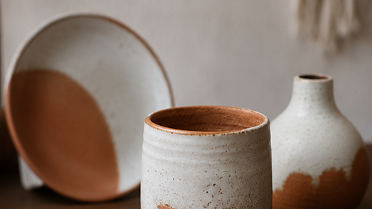
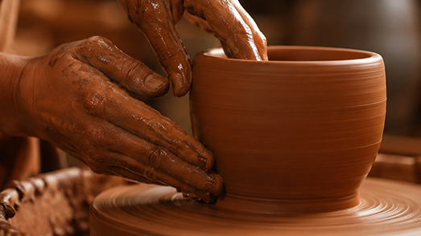
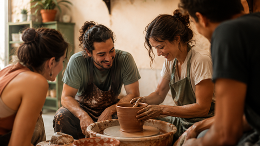
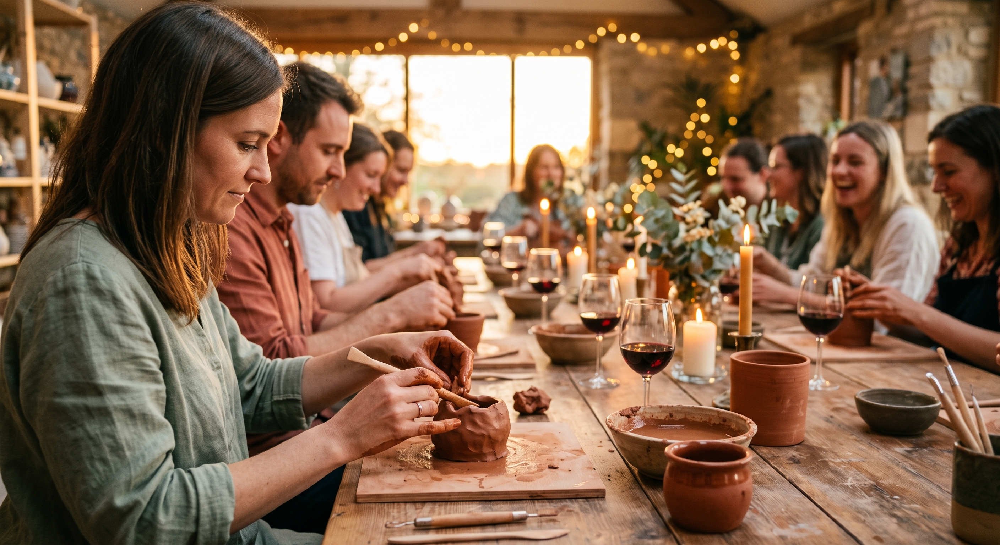
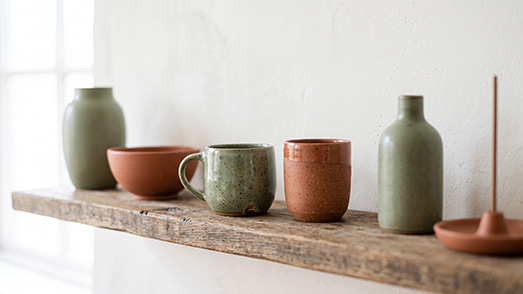
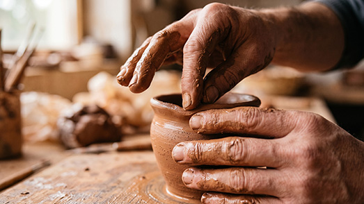
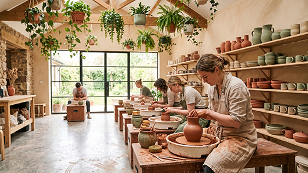
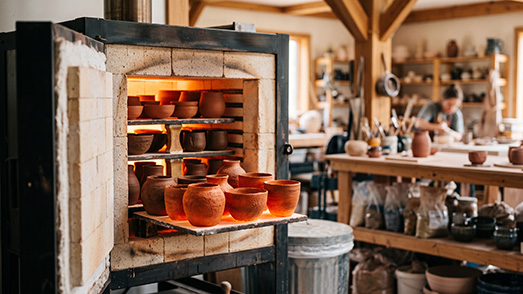

Piezas únicas
Vasijas, tazas y platos hechos a mano, cada uno con su propia textura e imperfección, pensados para durar y para contar una historia distinta.
En Terra & Barro convertimos el barro en piezas únicas. Ya seas principiante o ceramista experimentado, aquí encontrarás un espacio cálido para crear, aprender y llevarte a casa algo hecho por tus propias manos.

Terra & Barro nació hace más de ocho años como un pequeño taller familiar, con la idea simple de compartir el amor por la cerámica hecha a mano con quien quisiera aprender.
Hoy somos un estudio donde conviven ceramistas profesionales y personas que apenas descubren el oficio, unidos por el mismo gusto de trabajar la tierra y crear con paciencia.

Vasijas, tazas y platos hechos a mano, cada uno con su propia textura e imperfección, pensados para durar y para contar una historia distinta.

Talleres semanales donde aprendes desde cero: preparación del barro, técnicas de torno y modelado a mano, en grupos pequeños y con acompañamiento cercano.

Organizamos sesiones creativas para cumpleaños, despedidas o actividades de equipo, con todo el material incluido y una experiencia relajada para todos.




Escríbenos y cuéntanos qué te gustaría crear. Con gusto te ayudamos a elegir la clase o el servicio que mejor se ajuste a ti.